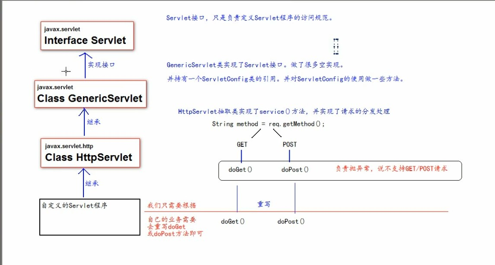
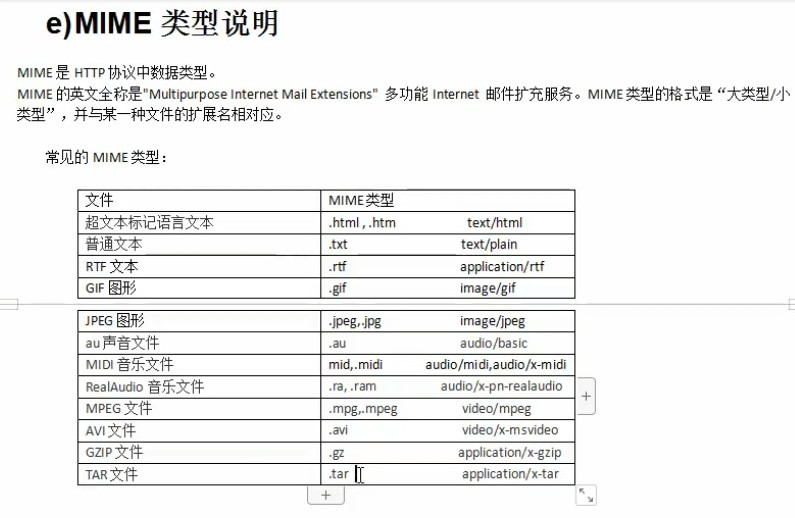
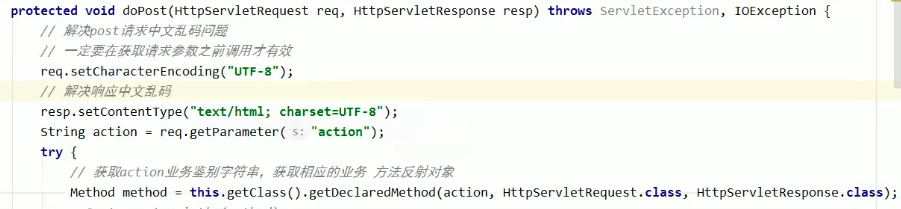

**通过在service方法当中，获取请求的方式，然后做判断，从而调用不同的功能方法
public void service(ServletRequest servletRequest, ServletResponse servletResponse) {
//ServletRequest也是一个接口,它有一个子接口叫HttpServletRequest,这个类有一个getMethod()方法，这个方法可以得到请求Servlet程序的请求方式。
//获取请求方式
String method = (HttpServletRequest)servletRequest.getMethod();
//判断请求方式是Get还是Post并执行对应代码
if ("GET".equals(method)){
doGet();
}
if ("POST".equals(method)){
doPost();
}
}
//因为一般情况下一个方法只干一个事情，但service方法判断GET和POST请求方式并执行各自的代码显得非常臃肿，不好维护。
//所以，把GET请求方式具体做的事封装成一个方法，把POST请求方式具体做的事封装成一个方法。
/**
做GET请求的操作
*/
public void doGet(){
System.out.println("get请求");
}
/**
做POST请求的操作
*/
public void doPost(){
System.out.println("post请求");
}public void service(ServletRequest servletRequest, ServletResponse servletResponse) {
//ServletRequest也是一个接口,它有一个子接口叫HttpServletRequest,这个类有一个getMethod()方法，这个方法可以得到请求Servlet程序的请求方式。
//获取请求方式
String method = (HttpServletRequest)servletRequest.getMethod();
//判断请求方式是Get还是Post并执行对应代码
if ("GET".equals(method)){
doGet();
}
if ("POST".equals(method)){
doPost();
}
}
//因为一般情况下一个方法只干一个事情，但service方法判断GET和POST请求方式并执行各自的代码显得非常臃肿，不好维护。
//所以，把GET请求方式具体做的事封装成一个方法，把POST请求方式具体做的事封装成一个方法。
/**
做GET请求的操作
*/
public void doGet(){
System.out.println("get请求");
}
/**
做POST请求的操作
*/
public void doPost(){
System.out.println("post请求");
}### 实际开发中一般很少通过实现Servlet接口这种方式去实现Servlet程序 ### 一般都通过去继承(实现了Servlet接口的子类(抽象子类)，如HttpServlet类)的方式去实现Servlet程序 ### ***通过继承HttpServlet实现Servlet程序*** 1. 编写一个类去继承HttpServlet类 2. 根据业务需要重写doGet或doPost方法 3. 到web.xml中的配置Servlet程序的访问地址
### 实际开发中一般很少通过实现Servlet接口这种方式去实现Servlet程序
### 一般都通过去继承(实现了Servlet接口的子类(抽象子类)，如HttpServlet类)的方式去实现Servlet程序
### ***通过继承HttpServlet实现Servlet程序***
1. 编写一个类去继承HttpServlet类
2. 根据业务需要重写doGet或doPost方法
3. 到web.xml中的配置Servlet程序的访问地址
ServletConfig类是Servlet程序的配置信息类，
主要是用来做初始化Servlet程序的。
Servlet程序和ServletConfig对象都是由Tomcat创建，我们负责使用。
Servlet程序默认是第一次访问的时候创建，ServletConfig是每个Servlet程序创建时，就创建一个对应的ServletConfig对象。
ServletConfig类的三大作用
public void init(ServletConfig servletConfig){
System.out.println("init 初始化方法");
//获取Servlet程序的别名servlet-name的值
System.out.println("HelloServlet程序的别名是:" + servletConfig.getServletName());
//获取初始化参数init-param
System.out.println("初始化参数username的值是:" + servletConfig.getInitParamerter("username"));
System.out.println("初始化参数url的值是:" + servletConfig.getInitParameter("url"));
//获取ServletContext对象
System.out.println(servletConfig.getServletContext());
}public void init(ServletConfig servletConfig){
System.out.println("init 初始化方法");
//获取Servlet程序的别名servlet-name的值
System.out.println("HelloServlet程序的别名是:" + servletConfig.getServletName());
//获取初始化参数init-param
System.out.println("初始化参数username的值是:" + servletConfig.getInitParamerter("username"));
System.out.println("初始化参数url的值是:" + servletConfig.getInitParameter("url"));
//获取ServletContext对象
System.out.println(servletConfig.getServletContext());
}什么是ServletContext?
ServletContext是一个接口，它表示Servlet上下文对象
一个Web工程，只有一个ServletContent对象实例。
ServletContent对象是一个域对象。
| 存数据 | 取数据 | 删除数据 | |
|---|---|---|---|
| Map | put() | get() | remove() |
| 域对象 | setAttribute() | getAttribute() | removeAttribute() |
什么是域对象?
域对象，是可以像Map对象一样存取数据的对象，叫域对象。
这里的域指的是存取数据的操作范围,整个web工程
ServletContext类的四个作用
Http协议就是客户端和服务器之间通信时，发送的数据，需要遵守的规则，叫HTTP协议。Http协议中的数据又叫报文。
客户端给服务器发送的数据叫请求。
服务器给客户端回传数据叫响应。
请求的Http协议格式
响应的Http协议格式
200 表示请求成功
302 表示请求重定向
304 表示资源未被修改，当不是第一次访问一个静态页面或者图片的时候，就会得到这个提示。
401 未授权
405 方法不被允许
404 请求地址错误
408 请求超时
414 请求url过长
500 表示服务器已经接收到请求，但是服务器内部代码错误
MIME类型就是Http协议中的数据类型

HttpServletRequest类有什么作用
每次只要有请求进入Tomcat服务器，Tomcat服务器就会把请求过来的Http协议信息解析好封装到Request对象中。然后传递到service方法（doGet和doPost）中给我们使用。我们可以通过HttpServletRequest对象，获取到所有请求的信息。
**HttpServletRequest类的常用方法
// 请求转发必须要以斜杠打头, / 斜杠表示地址为：http://ip:port/工程名/ , 映射到IDEA代码的web目录
// 斜杠后面跟资源名就可以 如 "/servlet2"
RequestDispatcher requestDispatcher = req.getRequestDispatcher("/servlet2");
requestDispatcher.forward(req,resp);RequestDispatcher requestDispatcher = req.getRequestDispatcher("/servlet2");
requestDispatcher.forward(req,resp);请求转发的特点：
相对路径
所有相对路径在工作时候都会参照当前浏览器地址栏中的地址来进行跳转(有base标签除外)。
base标签 设置页面相对路径工作时参照的地址，href属性就是参数的地址值。
web中斜杠 / 的不同意义
/ 斜杠 如果被浏览器解析，得到的地址是：http://ip:port/
/ 斜杠 如果被服务器解析，得到的地址是：http://ip:port/工程路径/
1. /资源名
2. servletContext.getRealPath("/");
3. requeset.getRequestDispatcher("/");
特殊情况: response.sendRediect("/"); 把斜杠发送给浏览器解析。得到 http://ip:port/
HttpServletResponse类的作用
HttpServletResponse类和HttpServletRequest类一样。每次请求进来，Tomcat服务器都会创建一Response对象传递给Servlet程序去使用。HttpServletRequest表示请求过来的信息，HttpServletResponse表示所有响应的信息，我们如果需要设置返回给客户端的信息，都可以通过HttpServletResponse对象来进行设置。
两个输出流的说明
// 设置响应状态码302，表示重定向
resp.setStatus(302);
// 设置响应头，告知浏览器新的请求地址
resp.setHeader(name,value);
e.g. resp.setHeader("Location","http://localhost:8080/工程路径/资源名");// 设置响应状态码302，表示重定向
resp.setStatus(302);
// 设置响应头，告知浏览器新的请求地址
resp.setHeader(name,value);
e.g. resp.setHeader("Location","http://localhost:8080/工程路径/资源名");简便实现(推荐使用)
resp.sendRedirect("http://localhost:8080/工程路径/资源名")简便实现(推荐使用)
resp.sendRedirect("http://localhost:8080/工程路径/资源名")请求重定向的特点
解决post请求中文乱码问题，一定要在获取请求参数之前调用才有效
req.setCharacterEncoding("UTF-8");
解决响应中文乱码问题
resp.setContentType("text/html; charset=UTF-8");

context-param -> listener -> filter -> servlet
如果有拦截器 interceptor
context-param -> listener -> filter -> interceptor -> 控制器